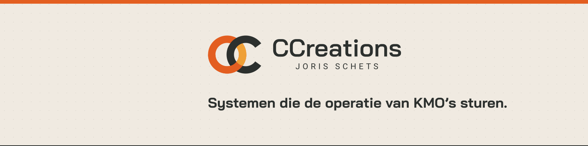
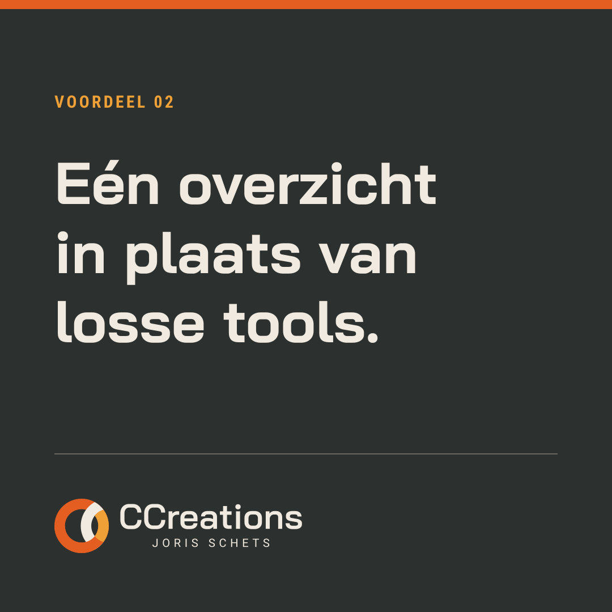
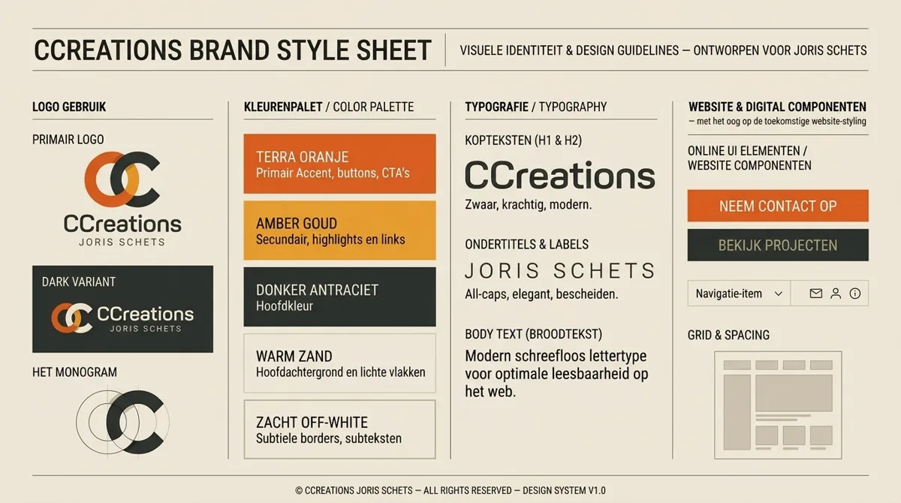
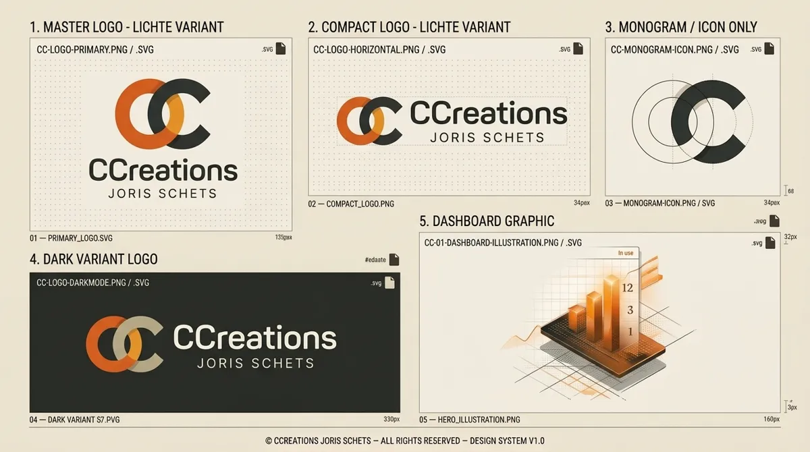

Merkbord
Eén bron voor het merk CCreations.
Logo’s, kleuren, typografie en templates. Alles op deze pagina komt uit dezelfde code en dezelfde bestanden als de site.
Terug naar de siteLogo’s
Vier vormen, elk als SVG met letters in contouren.


Kleuren
-
Terra oranje
#E35E20 · --orange
Logo, illustraties en grote koppen
-
Oranje inkt
#C44D14 · --orange-ink
Knoppen en kleine tekst, voor voldoende contrast
-
Amber goud
#EFA037 · --amber
Accent op donkere vlakken
-
Donker antraciet
#2C302E · --charcoal
Tekst, lijnen en donkere vlakken
-
Warm zand
#F0EAE1 · --sand
Hoofdachtergrond
-
Zacht off-white
#FCFAF7 · --card
Lichte vlakken en formulieren
Typografie
Koppen
Systemen die de operatie sturen.
Labels
Fullstack developer & AI-adviseur
Broodtekst
Planning, werkbonnen, offertes en opvolging op één plek, met AI waar het dagelijks verschil maakt. Voor bedrijven die geen IT-afdeling hebben en toch willen dat hun processen sneller, duidelijker en betrouwbaarder lopen.
Componenten
Dit zijn de echte onderdelen van de site, geen afbeelding ervan.
Templates voor socials





Van AI-schets naar systeem
De huisstijl begon als reeks schetsen uit een beeldgenerator. Die zijn snel en richtinggevend, maar niet nauwkeurig: tekst en maten kloppen er niet in. Daarna is alles nagemeten en uitgewerkt in code.

